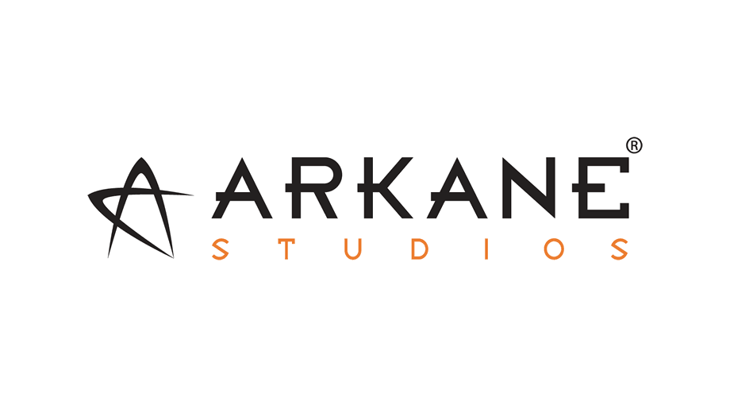

Favorite Things
- Movies
- Music
- Shows
Star Wars movies are by far the best movies of all time, and yes I know I'm a Star Wars nerd. I even got a ticket for the midnight premiere of the new movie, Rogue One: A Star Wars Story. For more information on the glory that is Star Wars, follow this.
I will listen to almost all types of music, but my preferences are mainly in Classic Rock and Alternative music.
Some good artists that I am a fan of are Aerosmith, and The Rolling Stones.
West World is one of the best shows on TV. It is probobably one of the most mind enticing show and helps to allow people to explore the concepts in artificial intelligence.
Game of Thrones is also one of the best shows on TV. It has great charcter development and shows great scope.
Limitless is also another show that I like to watch. It's an extension of a good movie that starred the actor Bradley Cooper.
Career Interests
Fields
- AI
- VG Dev
- App Design
The field of artificial intelligence is a vast field that will probably become the subject of some of the most challenging questions in Computer Science in the coming decade. The field is intriguing to me because its ultimate goal is trying to rationalize and seemingly replicate a human mind through the use of code. This complexity is something I could see myself getting lost in and pursuing for vast stretches of time and wanting to be on the cutting edge of for years to come.
As an avid gamer myself this route of travel seems to be an intersting path. I've often found myself thinking about how the engines that run games run and how they work with the other elements in a game to create a finished product. Getting into this field seems to be an intersting challenge that could constantly present new and challenging tasks for me to complete in the field.
This is probably the broadest field I have interests in. I have interest in web application design, computer application design, and mobile application design.
Resume Details
Here is a downloadable copy of my resume.
Resume
Or follow this link to see an online copy
Future Plans
My future plans will really depend on what field of Computer science I decide to go into. I'd like to work for a rather large company, wherever I decided to go. Some examples of companies I wouldn't mind working for are:
